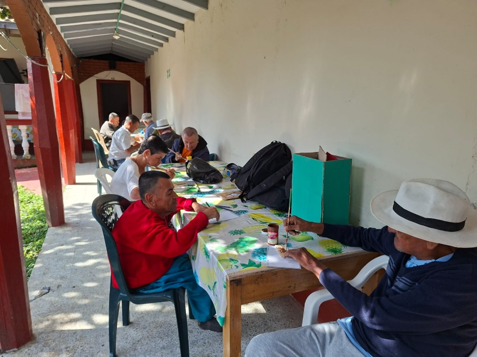
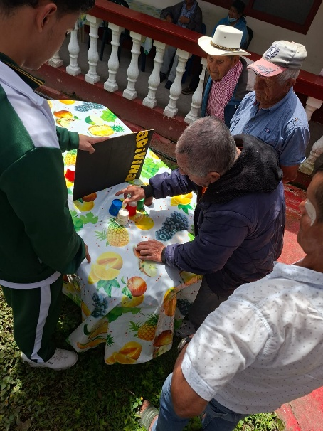
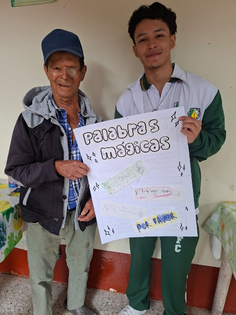
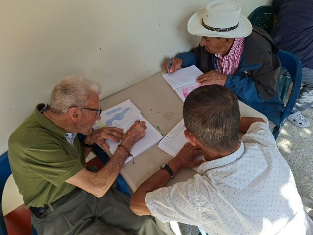
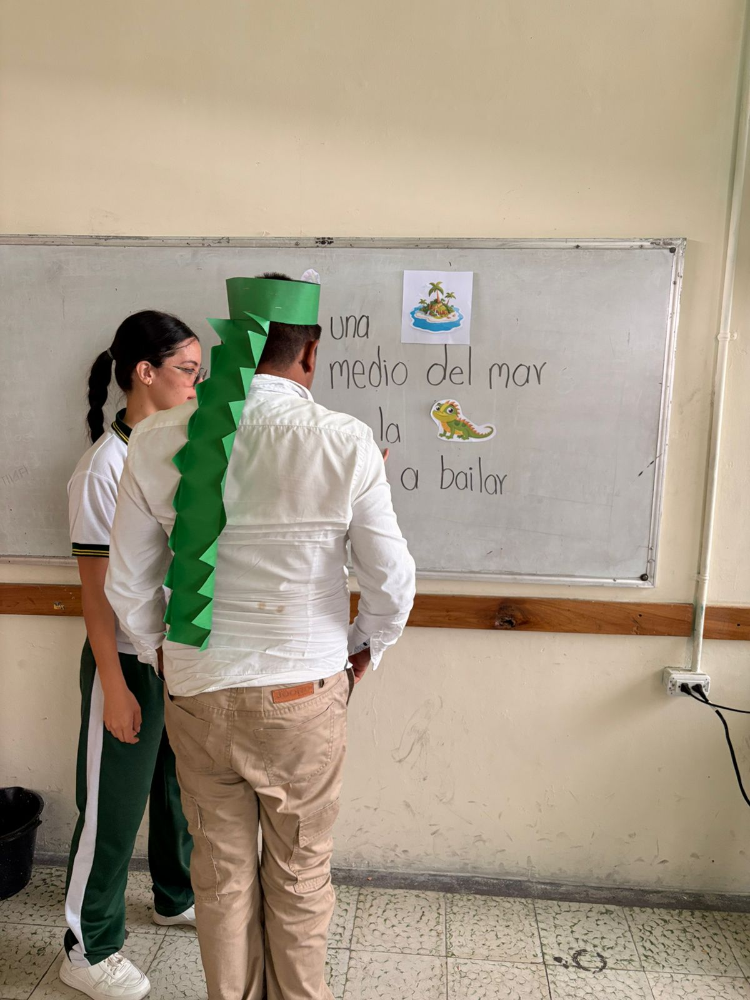
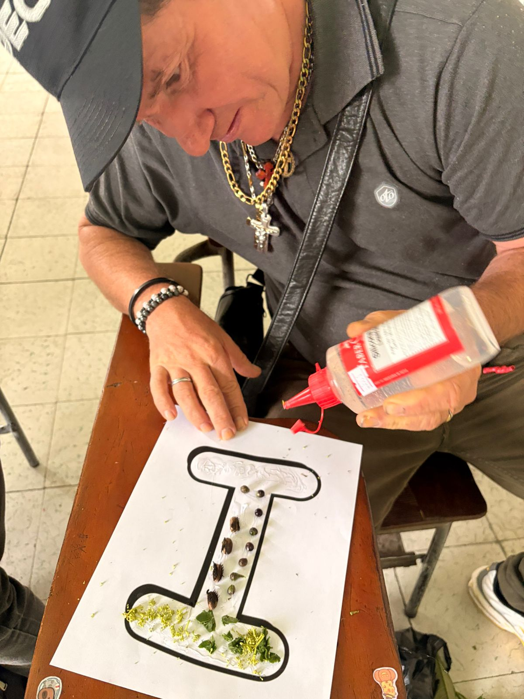
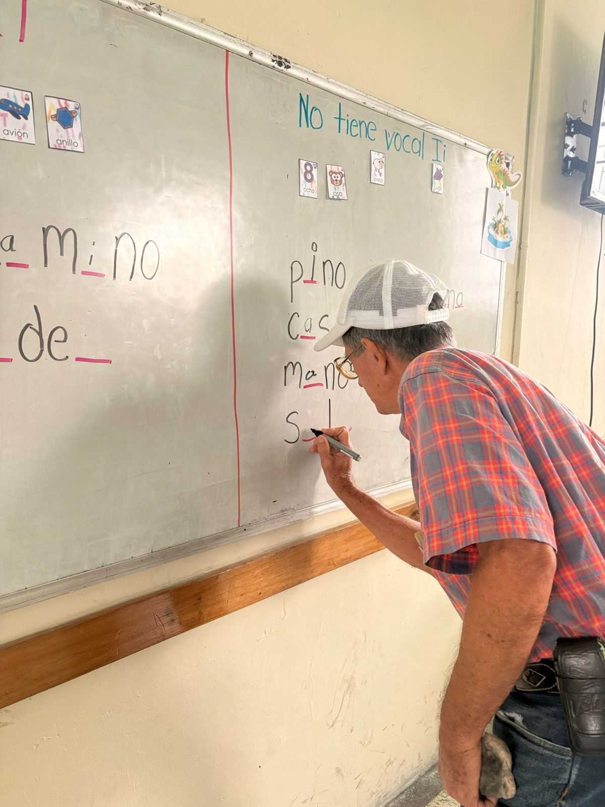
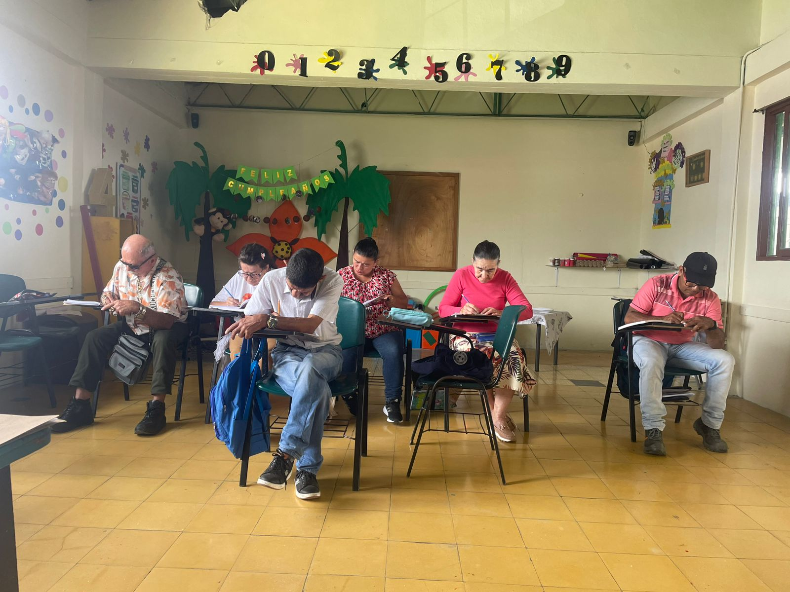
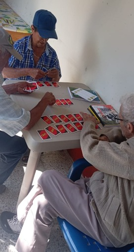

Memorias
de Andragogía
Abre para ver las fotos →
Casos de Impacto
Documento que recopila el impacto del proceso de alfabetización con adultos mayores del asilo: social, emocional y cognitivo.
Las actividades de lectura, escritura y dinámicas lúdicas promovieron la participación activa mediante juegos, fichas y cuentos. Se generaron espacios de interacción, mayor motivación y un vínculo afectivo sólido entre participantes y el docente en formación.

Impacto social: Las actividades grupales fortalecieron la convivencia y el trabajo en equipo, generando mayor participación y disposición para comunicarse.

Impacto emocional: El proceso generó alegría y motivación. Los participantes expresaron entusiasmo y se creó un ambiente de confianza y afecto.

Impacto cognitivo: Se fortalecieron memoria, atención y reconocimiento de letras. Las actividades estimularon las capacidades cognitivas de los adultos mayores.

El Despertar de la Lectura
Leer en voz alta un pequeño texto enfocado en la letra "i", con el acompañamiento directo de la maestra en formación, marcó el inicio de un vínculo profundo entre el adulto mayor y la palabra escrita. Ese gesto cotidiano —señalar la letra, repetir su sonido, reconocerla en el texto— encarna el principio andragógico que afirma que todo aprendizaje adulto se consolida cuando parte de la experiencia vivida y del acompañamiento respetuoso.
La maestra en formación no solo transmitió un contenido: construyó junto al estudiante un territorio seguro donde equivocarse forma parte del aprendizaje y cada avance, por pequeño que sea, merece ser celebrado.

Proyecto transversal: Rellenar la letra "i" con elementos de la naturaleza integró la creatividad manual con el reconocimiento de grafemas, demostrando que escribir también puede hacerse con las manos y los sentidos.

Construcción de palabras: Completar palabras con las letras "i" y "a" fortaleció la conciencia fonológica y la memoria visual. Cada hueco rellenado representó un puente entre el sonido conocido y el signo escrito.

Planas del abecedario: Don Adán repasó emocionado el abecedario completo, trazando mayúsculas y minúsculas con dedicación. Cada trazo ilustra cómo la escritura devuelve autonomía y dignidad al adulto aprendiz.

El Libro de Mi Propia Vida
Elaborar la portada de un libro cuya historia fuera la propia vida del estudiante constituyó una de las experiencias más significativas del proceso. Con materiales aportados por las docentes en formación, cada adulto mayor diseñó una portada que reflejaba quién es, de dónde viene y qué sueña.
La actividad activó la memoria autobiográfica, estimuló la expresión escrita y reafirmó la identidad de cada participante como sujeto con historia, voz y valor. Aprender a leer y escribir no es solo dominar un código: es recuperar la capacidad de nombrarse y contarse al mundo.

El juego como estrategia: En el juego de cartas UNO, la docente nombraba un número y un color; el adulto que tuviera esa carta la levantaba. Esta dinámica lúdica entrenó la escucha activa, el reconocimiento de colores y números en un ambiente de alegría compartida.

Escritura con sentido: Diseñar un reloj y escribir en su centro metas, deseos o propósitos para el nuevo año convirtió la escritura en un acto personal y significativo, testimonio de la capacidad expresiva que el proceso despertó en cada participante.

Comunidad de aprendizaje: El origami compartido entre maestros y alumnos construyó vínculos que trascienden el aula. Esos momentos de compañerismo son la base afectiva sobre la que se sostiene cualquier proceso educativo duradero.

¡Gracias por visitarnos!
Escuela Normal Superior
Nuestra Señora de la Candelaria
Memorias
de Andragogía
Desliza para ver las fotos →
Casos de Impacto
Las actividades de lectura, escritura y dinámicas lúdicas promovieron la participación activa. Se generaron espacios de interacción, mayor motivación y un vínculo afectivo sólido entre participantes y el docente en formación.
Impacto social: Las actividades grupales fortalecieron la convivencia y el trabajo en equipo, generando mayor comunicación.
Impacto emocional: El proceso generó alegría y motivación, creando un ambiente de confianza y afecto.
Impacto cognitivo: Se fortalecieron memoria, atención y reconocimiento de letras y palabras.
El Despertar de la Lectura
Leer en voz alta un pequeño texto enfocado en la letra "i", con el acompañamiento directo de la maestra en formación, marcó el inicio de un vínculo profundo entre el adulto mayor y la palabra escrita. Ese gesto cotidiano encarna el principio andragógico de que todo aprendizaje adulto se consolida con acompañamiento respetuoso y desde la experiencia vivida.
Proyecto transversal: Rellenar la letra "i" con elementos de la naturaleza integró creatividad manual con reconocimiento de grafemas.
Construcción de palabras: Completar palabras con "i" y "a" fortaleció la conciencia fonológica y la memoria visual de cada participante.
Planas del abecedario: Don Adán repasó emocionado el abecedario completo; cada trazo reflejó cómo la escritura devuelve autonomía y dignidad al adulto aprendiz.
El Libro de Mi Propia Vida
Elaborar la portada de un libro cuya historia fuera la propia vida del estudiante fue una de las experiencias más significativas del proceso. Con materiales aportados por las docentes en formación, cada adulto mayor diseñó una portada que reflejaba quién es, de dónde viene y qué sueña, activando la memoria autobiográfica y reafirmando su identidad como sujeto con historia y voz propia.
El juego como estrategia: En el juego de cartas UNO, la dinámica lúdica entrenó escucha activa, reconocimiento de colores y números en un ambiente de alegría compartida.
Escritura con sentido: Diseñar un reloj y escribir metas y propósitos convirtió la escritura en un acto personal y profundamente significativo para cada participante.
Comunidad de aprendizaje: El origami compartido entre maestros y alumnos construyó vínculos afectivos que sostienen cualquier proceso educativo duradero.
¡Gracias por visitarnos!
Escuela Normal Superior
Nuestra Señora de la Candelaria